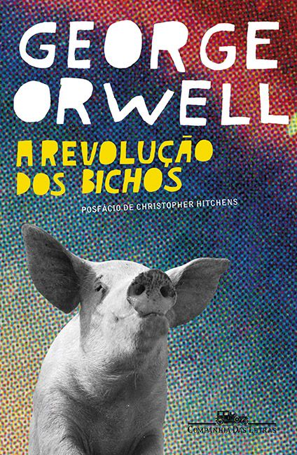

por:Mariana santana
Boas-vindas(o) ao meu blog, aqui vou compartilhar a sinopse de livros bem detalhada para você saber se vai gostar ou não, junto de resenhas e novodades do mundo dos livros.
Boas-vindas(o) ao meu blog, aqui vou compartilhar a sinopse de livros bem detalhada para você saber se vai gostar ou não, junto de resenhas e novodades do mundo dos livros.
As distopias são livros que retratam um mundo em caos, onde na grande maioria das vezes a culpa é de governos autoritários que acabam destruindo o planeta ou país.
1. A revolução dos bichos, de George Orwell.
No livro, os animais resolvem fazer uma revolução contra os seus donos, mas após um tempo dos porcos comandando, os outros animais percebem que a fazenda estava ficando mais rígida e opressora do que antes, quando os humanos a comandavam.

2. Fahrenheit 451, de Ray Bradbury
esse livro,fala sobre um bombeiro chamado Guy montag que tinha a sunção de queimar livros, pois nessa distopia a leitura considerado algo banal, mas as telas era algo bem valorizado, então os 'bombeiros' tinha a função de queimar esse livros para as pessoas terem mais dificuldade de acesso.Guy não questionava até conhecer Clarrise que começa a fazer ele questionar essa 'normalidade'.